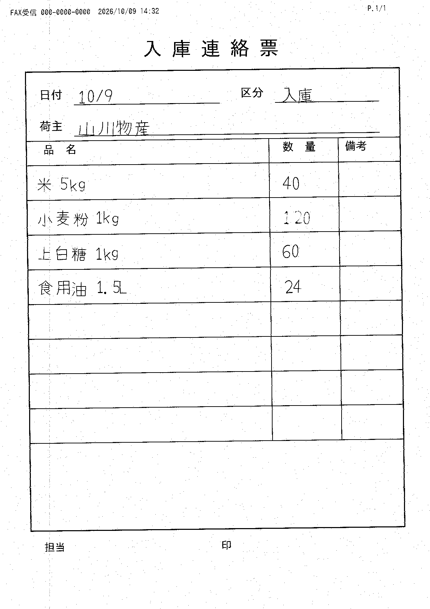

- 1FAXを選ぶ
- 2確かめて直す
- 3保存してExcelへ
FAXのPDFを選んでください
選ぶだけで、日付・入庫か出庫か・荷主名・商品名・数量を表にします。
うまく読み込めませんでした選ばれたファイル「会議資料.docx」はPDFではありません。FAXをPDFにしたファイルを選んでください。
またはここにPDFをドラッグしてください。読み取りのまちがいは、次の画面で直せます。
デモ用のサンプルFAXで試す
- 入庫
- 出庫
- 入庫
- 出庫
- 1FAXを選ぶ
- 2確かめて直す
- 3保存してExcelへ
FAXのPDFを選んでください
選ぶだけで、日付・入庫か出庫か・荷主名・商品名・数量を表にします。
読み取っています…
FAX_入庫_手書き_山川物産.pdf 少しお待ちください。
読み取りが終わるまで、ほかのPDFは選べません。
- 1FAXを選ぶ
- 2確かめて直す
- 3保存してExcelへ
届いたFAX（FAX_入庫_手書き_山川物産.pdf）

読み取り結果を確かめてください
区分（入庫か出庫か）
入庫出庫
要確認確認が必要な所が1つあります。
| 商品名 | 数量 | |
|---|---|---|
要確認数字がにじんでいます。「120」で合っていますか？ | ||
- 1FAXを選ぶ
- 2確かめて直す
- 3保存してExcelへ
保存しました
山川物産の入庫 4件を保存しました。
Excelに入る内容（このとおりに出力されます）
| 日付 | 区分 | 荷主名 | 商品名 | 数量 |
|---|---|---|---|---|
| 2026/10/09 | 入庫 | 山川物産 | 米 5kg | 40 |
| 2026/10/09 | 入庫 | 山川物産 | 小麦粉 1kg | 120 |
| 2026/10/09 | 入庫 | 山川物産 | 上白糖 1kg | 60 |
| 2026/10/09 | 入庫 | 山川物産 | 食用油 1.5L | 24 |
いまの在庫
保存したFAX 2枚（10月9日分）の合計です。在庫は「入庫の合計 − 出庫の合計」です。
要確認在庫がマイナスの商品が1つあります。入庫のFAXがまだ保存されていないかもしれません。
| 商品名 | 入庫の合計 | 出庫の合計 | 在庫 |
|---|---|---|---|
| 米 5kg | 40 | 15 | 25 |
| 小麦粉 1kg | 120 | 0 | 120 |
| 上白糖 1kg | 60 | 0 | 60 |
| 食用油 1.5L | 24 | 10 | 14 |
| しょうゆ 1L | 0 | 8 | −8 マイナス |